Open Game System · design so far · 4 Oct 2026
One cast at the start of the evening puts the OGS launcher on the TV. Every game after that opens inside the same stream. Phones are the remote and the controllers; nobody recasts, and nobody types their name twice.
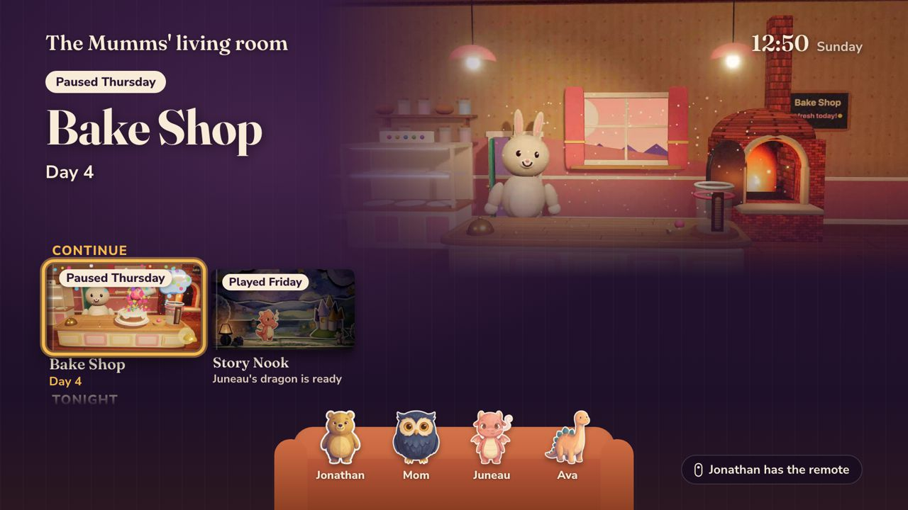
How it fits together
The phone app drives. The TV runs one page all night, the launcher, which puts each game's own TV page inside itself. Games don't change: they already tell OGS which page belongs on the TV, and OGS sends it to the launcher instead of recasting.
flowchart LR P[Phone app] -- "Cast (once)" --> C[Chromecast] C -- "opens" --> L[TV launcher] P <-- "couch session (WebSocket)" --> S[(OGS API · CouchSession)] L <-- "couch session" --> S P -- "opens game in WebView" --> G[Game phone page] G -- "here is my TV page" --> P P -- "game.view" --> S S -- "frame this" --> L L -- "frames" --> T[Game TV page]
The phone app
The app opens on Playing only when a game you were playing is live; otherwise on Library. Profile switching (Netflix-style) comes later; for now it's one profile per device.
Every sitting you're in, each with Rejoin. Empty state suggests games and Cast to TV.
BuiltA big Cast button, then the remote: what's on the TV, change TV, d-pad, Stop casting.
BuiltYour games. A tap opens the game's page: its sittings and New game.
BuiltFriends list, requests, Add a friend by QR, code, link or @id.
Empty state builtName, @id, sticker; back up with Apple, Google or email; notification switches.
Being built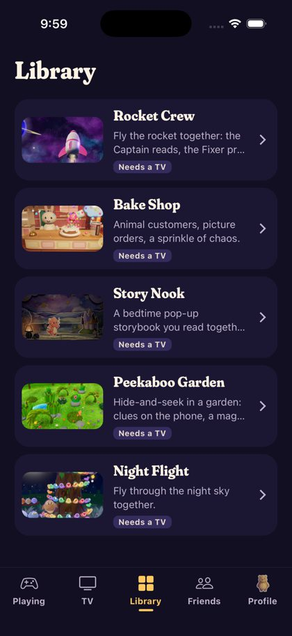
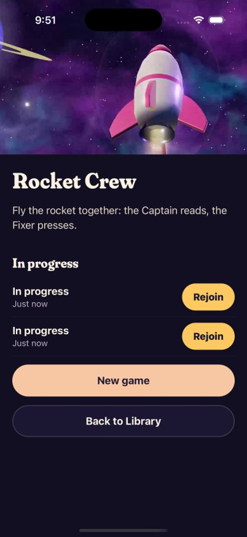
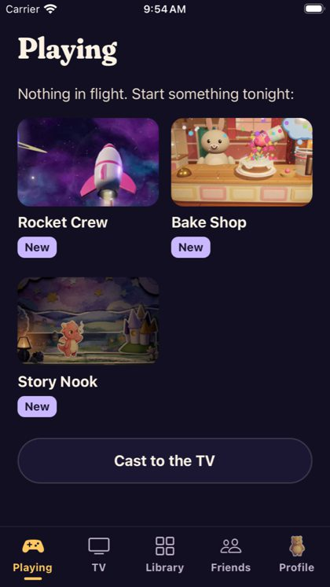
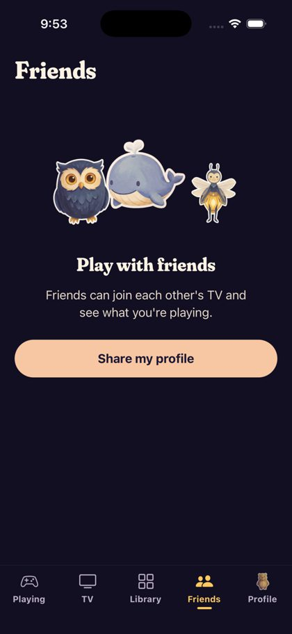
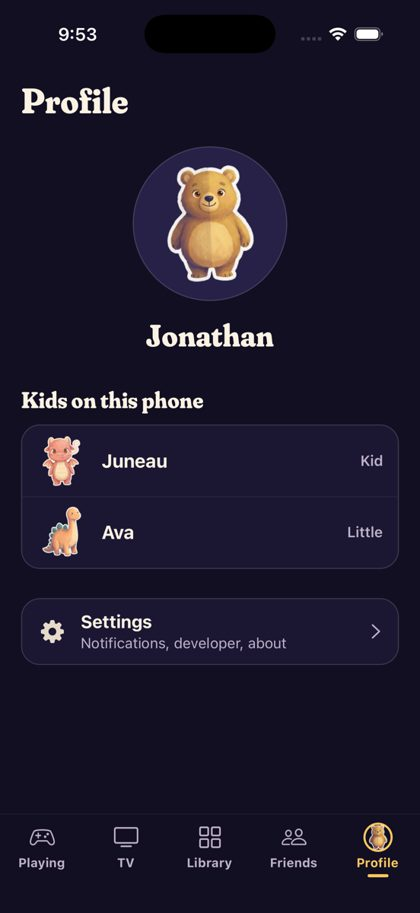
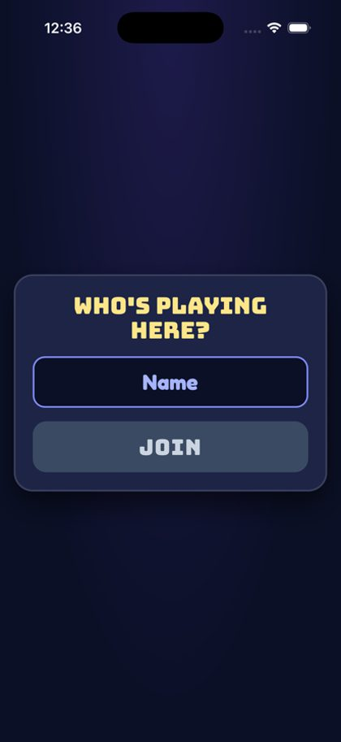
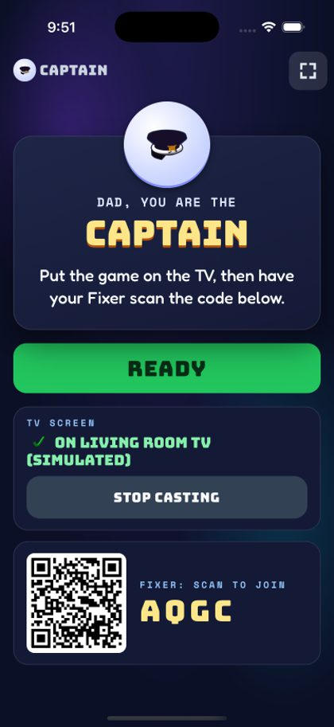
TV tab
Redesigned after "it looks kind of janky". The card on top says what's on the TV and what OK will do, in the TV's own words. The TV chip opens a picker to move the evening to another TV; the paused game keeps its place. Stop casting replaces "End for tonight" and asks first.
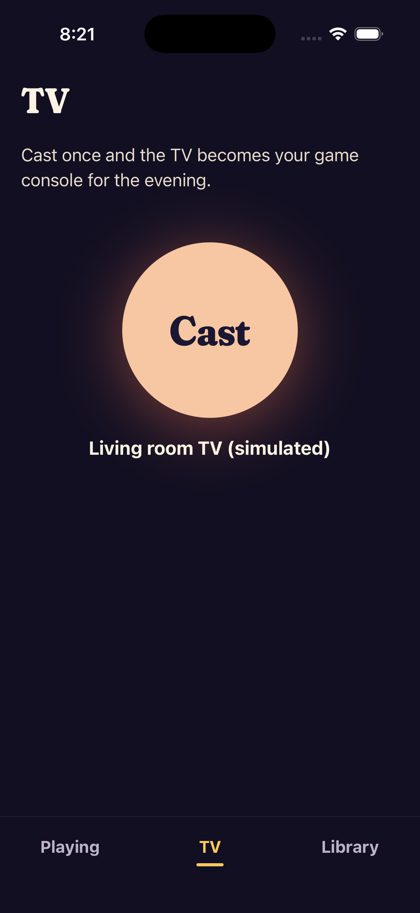
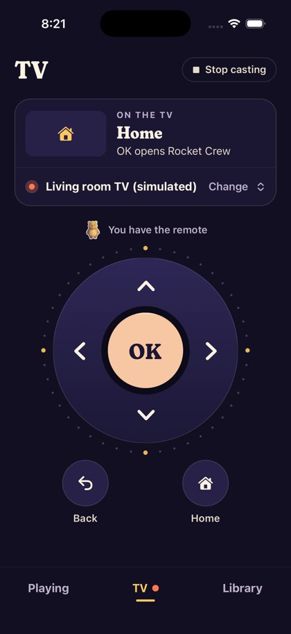
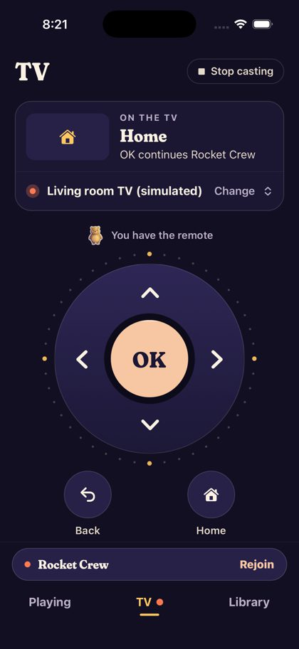
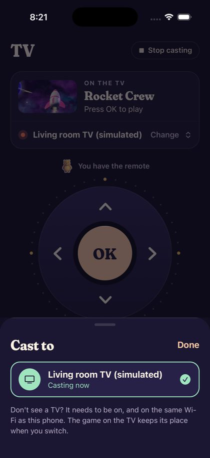
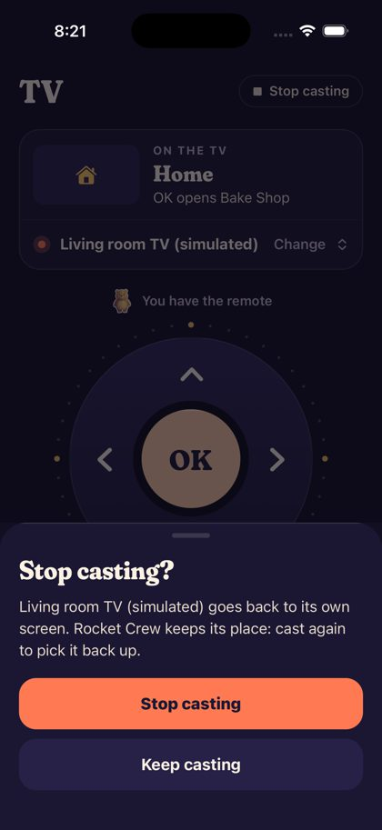
Critic scores went from a lowest row of 1 to 4 in one round; next round: the card should show the focused game like the TV does, one pressed style for every key, controls about 60pt lower, and the picker shown with several TVs.
The TV launcher
Picked from four launcher concepts: warm room, status-first rows. The text stays inside the TV's title-safe area, nothing smaller than 24px, and nothing covers the middle of a game.
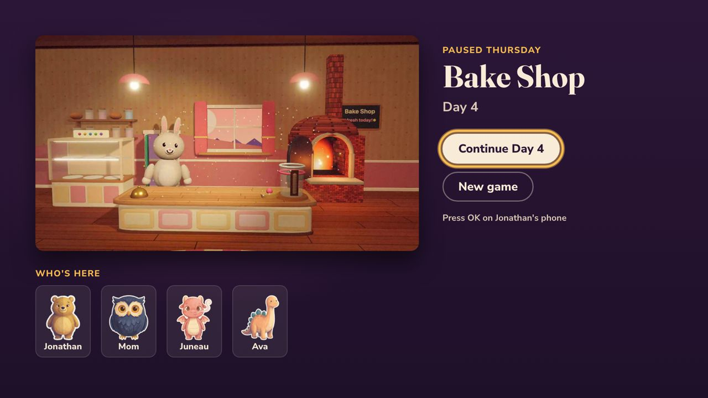
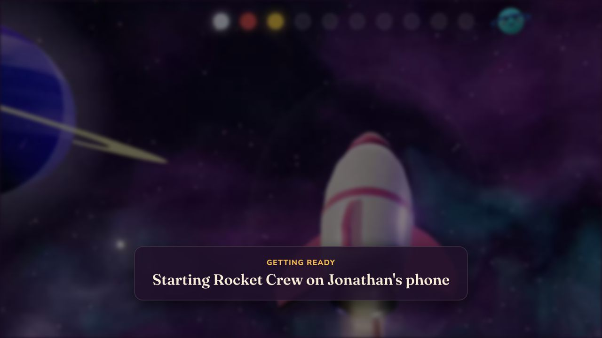
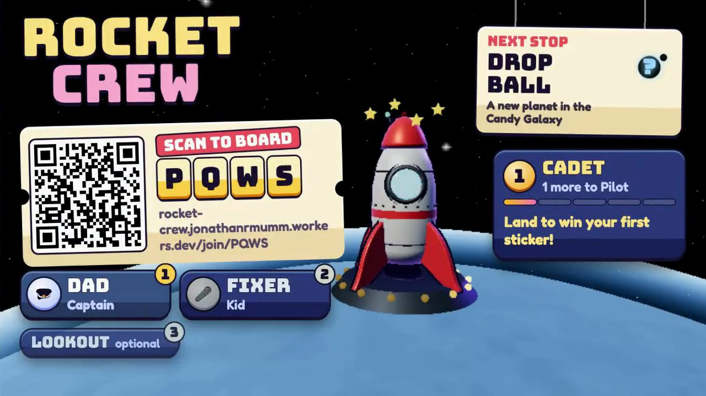
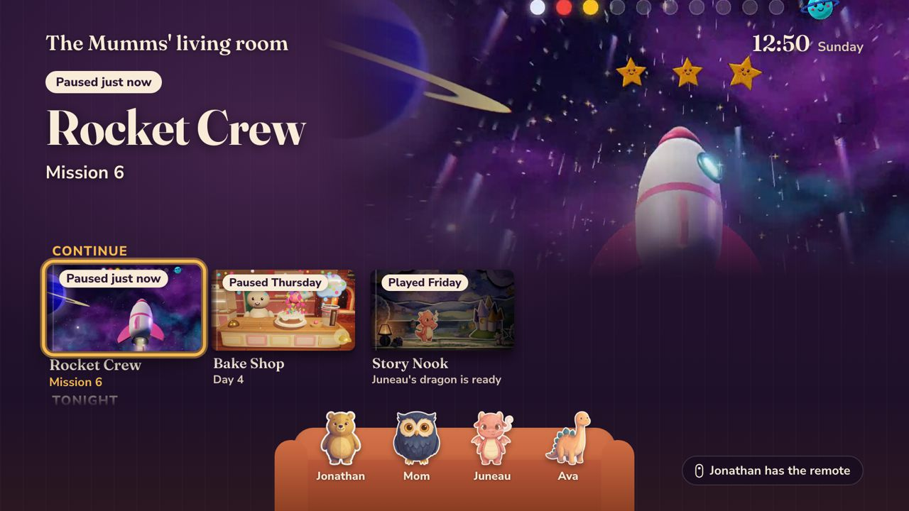
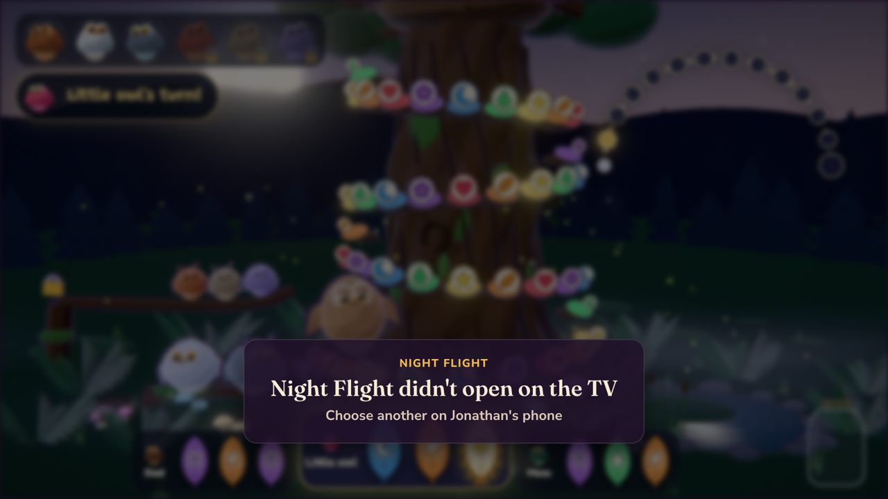
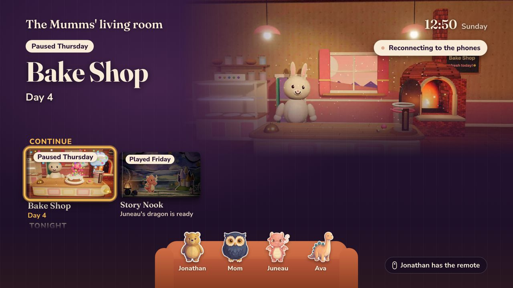
Flows
Verified
Chromecast loads +1, once.
Verified
With the real Rocket Crew.
Verified
Through the first-visit hint too.
Verified
Twice in a row, no recast.
Verified
Casts stays 1.
Verified
Labels look alike until games report one.
Designed
Slice 2.
Words
| Where | Say | Not |
|---|---|---|
| Going back to a game | Rejoin | |
| A game you stepped out of (phone) | In progress · Mission 6 | |
| The in-flight tab | Playing | |
| Ending the cast | Stop casting (asks first) | |
| Who you play with | Friends; Family later, for plans | |
| Empty Playing button | Cast to TV | |
| TV room title | Living room TV · Jonathan's games |
Profiles and friends
First priority: casting, profile setup and friends. Onboarding makes your profile once: name, @id, sticker. Every game you open gets a token with it, so Rocket Crew stops asking "Who's playing here?". Full spec: docs/product-specs/ogs-profiles.html.
| Decision | Chosen |
|---|---|
| Profile id | A unique @id, pre-filled from your name, editable |
| Kids | Full profiles for everyone, like Roblox, Minecraft and Steam. A grown-up types the name on a kid's iPad. Family (parental controls, plans) comes later. |
| Profiles per device | One for now; switching later |
| Joining a cast | No automatic joining. Friends tap Join; others use the TV code. Later: a push when a friend starts a new game, with a switch. |
| What a game sees | Your profile id, @id, name and avatar |
| Age | Not shared with games |
| Losing a phone | Back up with Apple, Google or email, offered after onboarding. Tested end to end with local emulators. |
Each game's token works only for that game and expires within the hour, so one game can't replay it to another.
Games inside OGS
Each game's "TV screen / Stop casting" box is gone inside the app (all five games, committed, not yet deployed). Games still tell OGS their TV page, so nothing else changes for them. Next, games read your profile and report a label for each sitting (room code or "Mission 6"), so two sittings look different.
Where it stands
| Couch session, launcher, cast once, swap, swipe back | Unit, seam and e2e tests on simulator + fake Chromecast | Verified |
| Rejoin to the same room; sittings per game | iOS e2e, two sittings of Rocket Crew | Verified |
| Library list + game page; Playing per sitting | Simulator | Built |
| Remote redesign, TV picker, Stop casting | Round 1 of 3 | Iterating |
| Five tabs; tab labels above the home indicator | Fix in progress | In progress |
| Profiles + sign-in (slice 1) | API, onboarding, Profile tab, emulator tests | In progress |
| Friends (slice 2) | Designed | Next |
| Games get your profile; sitting labels (slice 3) | Designed | Next |
| Pushes ("a friend started a new game") | After casting, profiles and friends | Later |
| Real Chromecast + your phone, iPad, TV | Needs deploy | Needs you |
Needs you
How we got here
Each round: screens and flows recorded, two fresh critics scored them, a fix pass, re-scored. The lowest row is the number that matters.
Five concepts: console, kitchen, channel, spine, people.
Console + layers. Session model was the gap, not polish.
Session model, failures, first run, identity tokens. Mean 7.25.
Wide variants of key moments, reviewed as sheets and video.
The pivot to cast-first: four TV launchers; the warm room won.
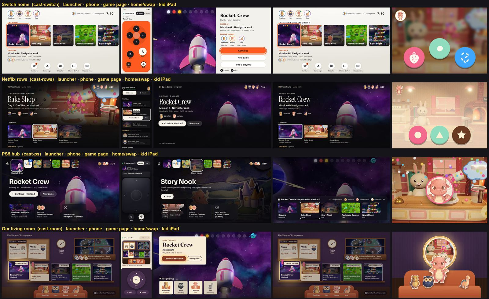